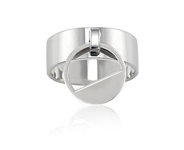
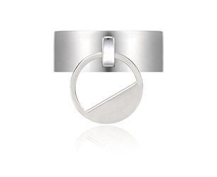
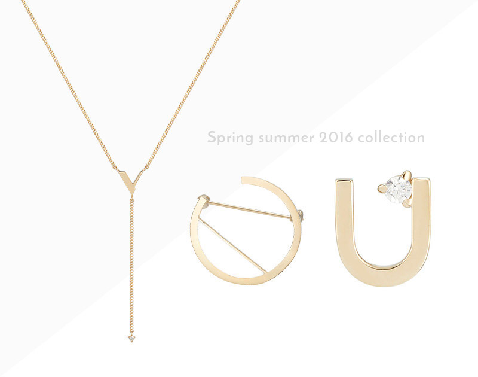
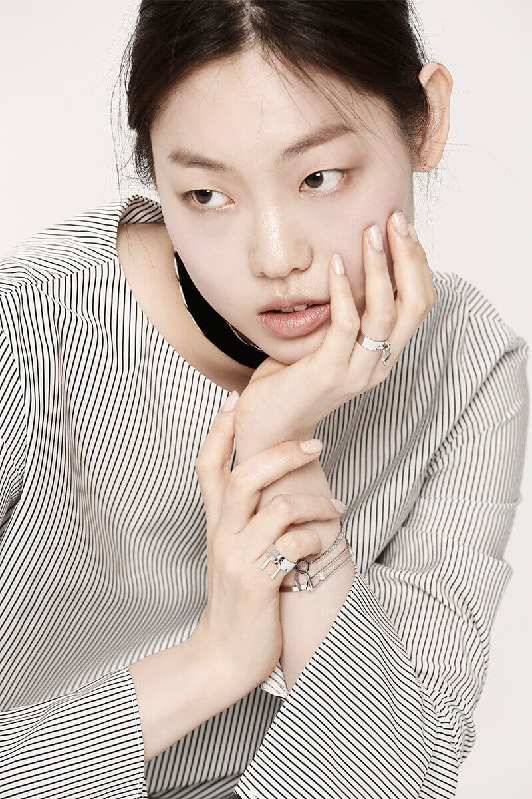
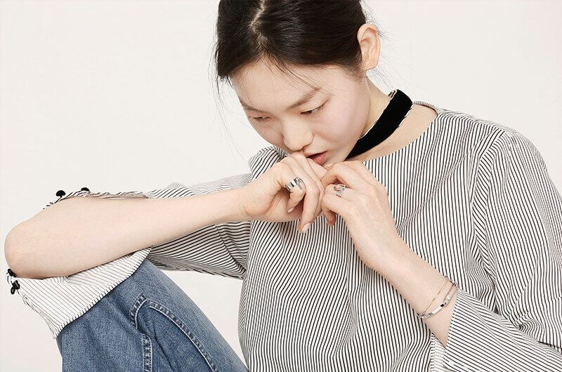
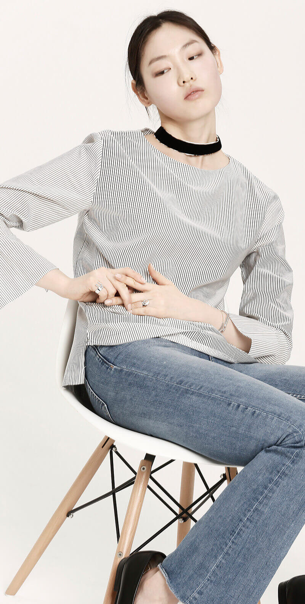

제품안내


JRSWD112-A308TR
Tienne Courbe O
티엔느 쿠브 O
제품 카테고리 안내

tienne ‘너의 것’이라는 뜻을 의미하는 불어
상대방과의 소통을 통해 행복을 추구하는 사회적 트렌드를 반영하여,
상대방 혹은 동반자’의 의미를 담은‘YOU’를 메인 테마로 사용.
물(water)의 흐르는 듯한 곡선 또는 우아한 유선형의 건축적 실루엣의 움직임을
메탈 프레임에 담아내어 디자인적 요소로 풀어낸 새로운 라인입니다.
제품 착용 이미지
원형의 라인에 담긴 물(water)의 실루엣을
금속 고유의 메탈릭한 감성으로 표현한 디자인의 반지.
폭이 넓은 금속 면 위에 고리를 중심으로 움직이는 유닛이 포인트인, 볼륨감이 있는 스타일의 아이템.
  details
| 구성 | 반지1 |
|---|---|
| 소재 | SV925 |
| 중량 | 4.51g |
| 사이즈 | 12호 / 14호 / 16호 |
| (제이에스티나 사이즈와 중량은 평균치를 기재하므로 약간의 오차가 있을 수 있습니다.) |
주의사항 및 안내
red define high taste
- 관리 부주의로 인한 원형 틀어짐은 나석 빠짐의 주 원인이 되므로 관리주의 요망합니다.
- 과도한 형태 훼손은 수리가 불가하며 경우에 따라 주문 제작으로 처리 가능합니다.
- 진주 장식 분실 시 수리로 제작 불가하여 주문 제작으로 처리 가능합니다.
- 크리스탈 라이트 그레이 진주 분실 시 비용 발생합니다.
- 스톤 변경 & 컬러 변경 불가합니다.
- 본 상품은 제이에스티나 본사에서 운영하는 상품입니다.
- 제품 발송 시 주얼리 케이스, 보증서, 쇼핑백이 함께 동봉되어 백화점 구매 시와 동일한 포장 상태로 발송됩니다.
- 전국 제이에스티나 레드 어느 매장에서나 A/S가 가능합니다.
- 사이즈 주문 제작 상품으로 교환, 환불이 불가합니다.
- 주문 취소할 경우 주문 후 1일 이내 요청해야만 취소 가능합니다.
- 단순한 고객 변심 / 착오로 반품, 교환하는 경우의 배송비는 고객님께서 부담하셔야 합니다.
- 이점 유의하여 주시기 바랍니다. (반지 상품 제외 / 우체국 택배 이용 시 5,000원 입니다)
- 제품의 교환은 불량일 경우에만 동일한상품에 한해서 이루어 집니다. (타 상품으로 교환 불가)
- 고객님 한 분 한 분을 위해 정성껏 제작하는 상품으로 주문 제작 7-8일 정도 (주말, 공휴일 제외) 소요됩니다.